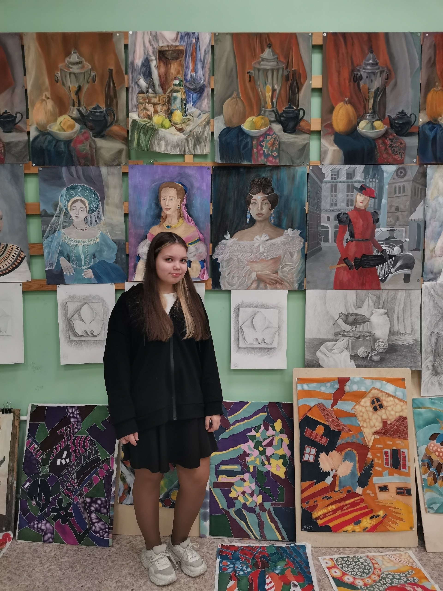
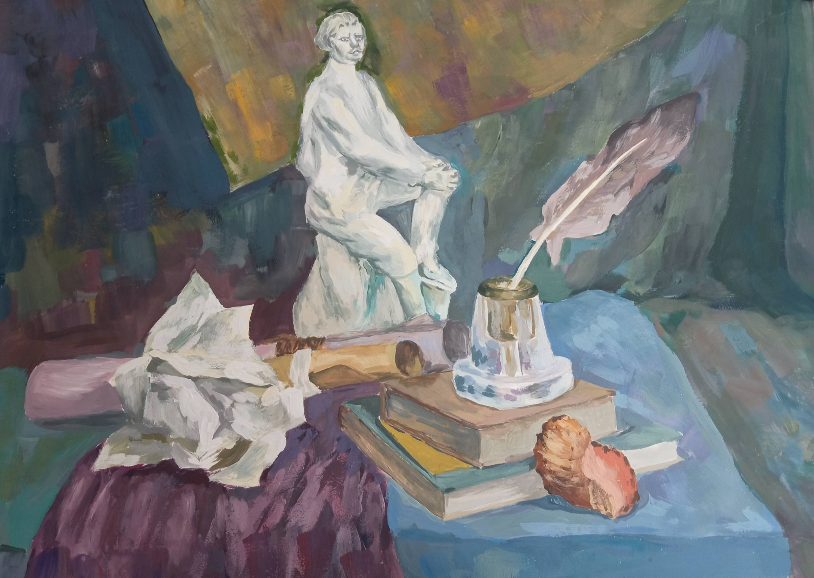
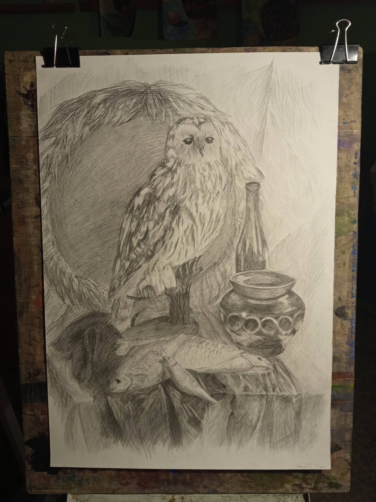
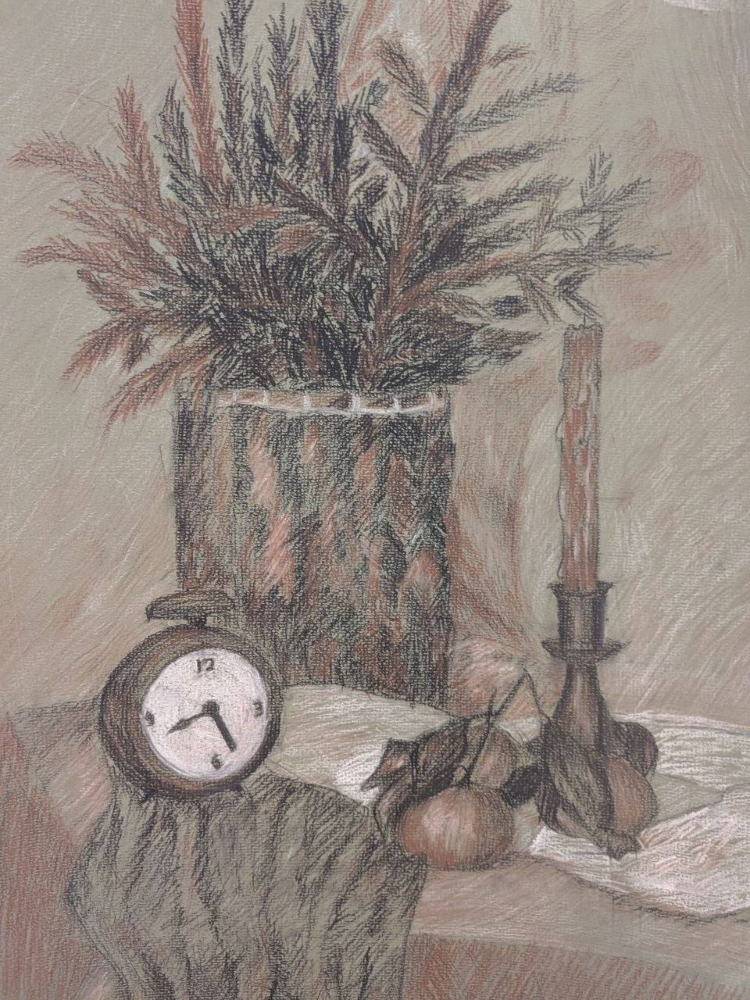
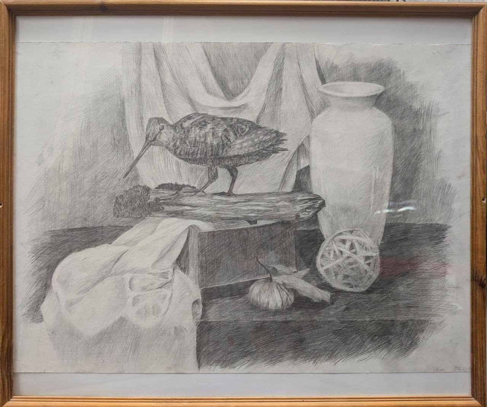
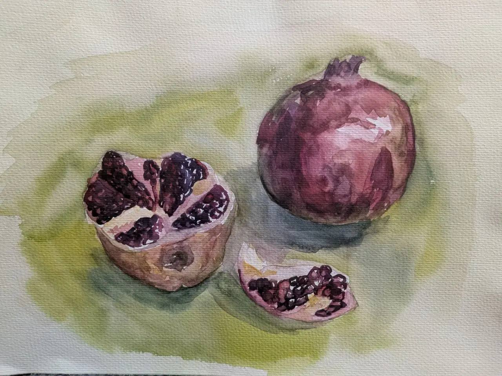
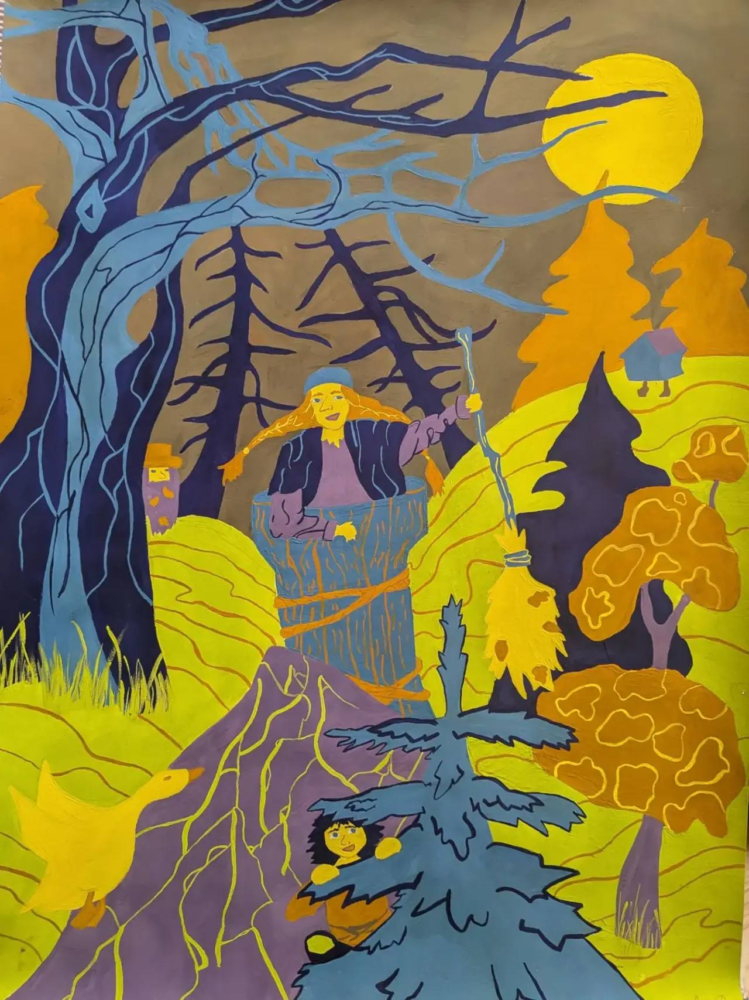
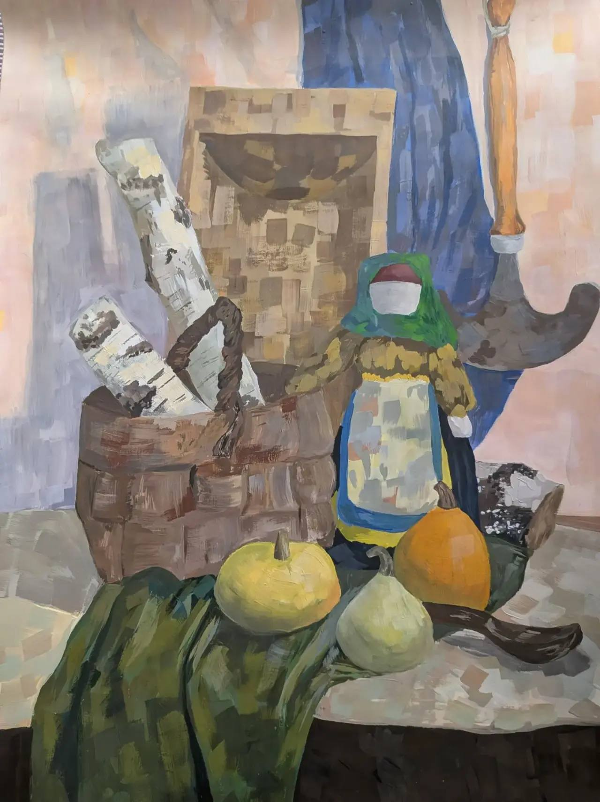
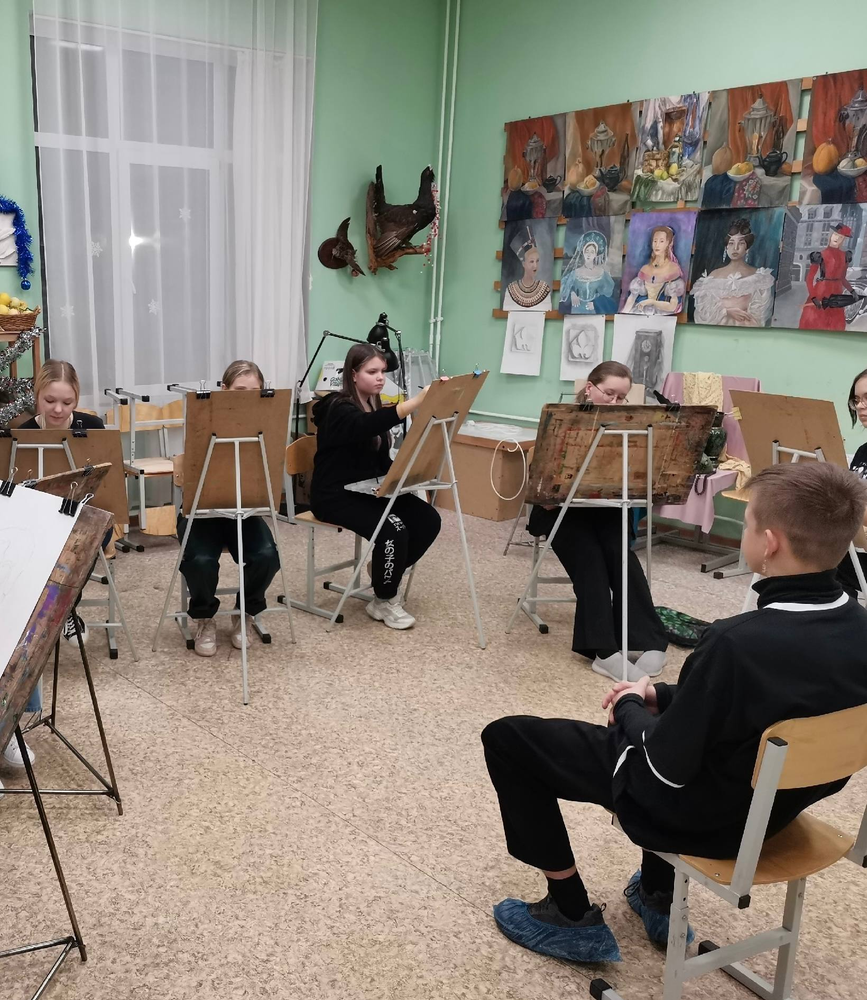
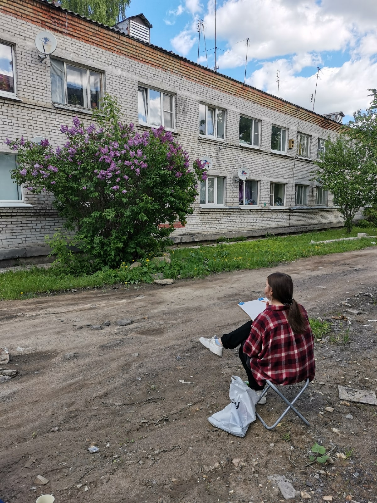

Художник · Акварель · Гуашь · Пастель · Карандаш
Создаю картины, наполненные светом и настроением. Работаю в техниках акварели, гуаши, пастели и карандашной графики. Вдохновляюсь натюрмортами, иллюстрациями к сказкам и городской средой.
Смотреть работы
Меня зовут Дарья Соколова, я художник из города Тосно Ленинградской области. Окончила Детскую школу искусств (ДШИ) г. Тосно, где получила базовое художественное образование и любовь к изобразительному искусству. В школе искусств изучала рисунок, живопись и композицию, участвовала в пленэрах и выставках.
В своих работах я использую разнообразные техники: лёгкую и прозрачную акварель, насыщенную гуашь, мягкую пастель и выразительный карандаш. Основные жанры, в которых я работаю — натюрморт и иллюстрация. Люблю создавать композиции с предметами, передавать фактуры и настроение через цвет и свет.
Избранные произведения 2021–2024









Заказ картин, иллюстраций, сотрудничество